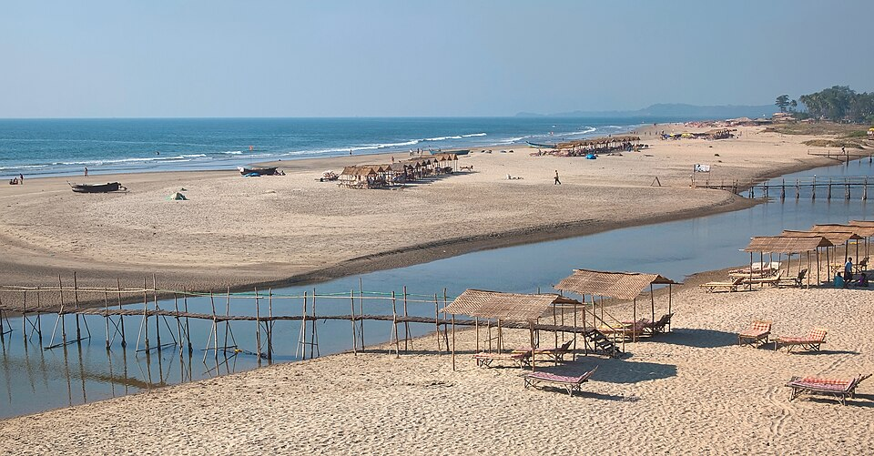
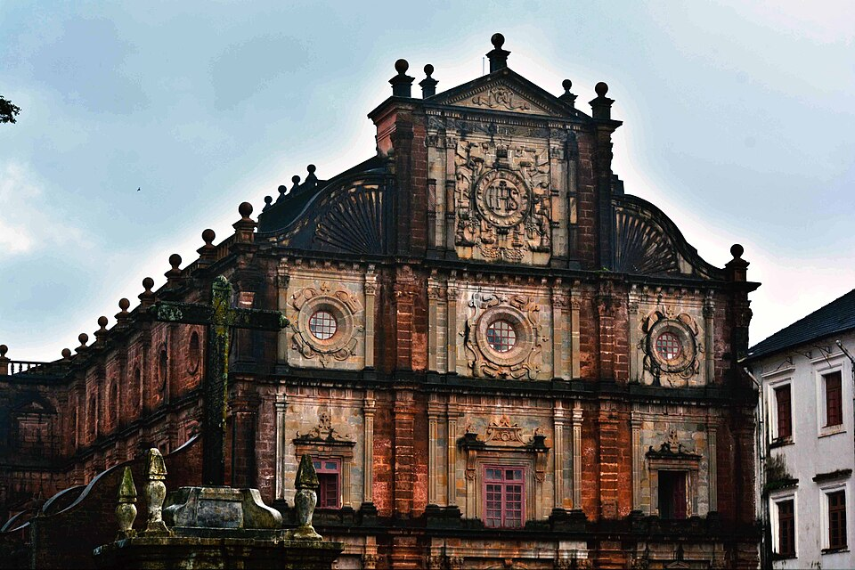
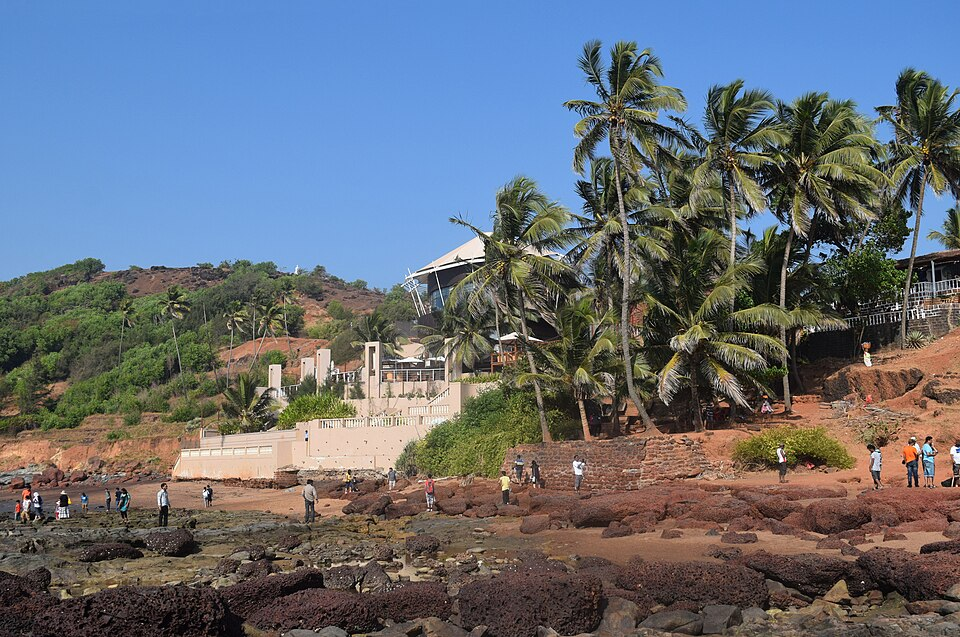

Goa Stop 5
Goa
West Coast India — Beaches, Spice & History
India's smallest state, Goa is a unique blend of Indian and Portuguese cultures, shaped by over 450 years of colonial rule. It is renowned for its pristine beaches, whitewashed UNESCO-listed churches, lively night markets, and spicy Goan fish curry.

Baga Beach
One of Goa's most popular beaches, lined with shacks and spectacular sunsets over the Arabian Sea.

Basilica of Bom Jesus
A UNESCO World Heritage Site — this 16th-century Baroque church houses the remains of St. Francis Xavier.

Anjuna Beach
Known for dramatic rocky cliffs and its famous bohemian flea market running since the 1960s.
Quick Facts
- India's smallest state by area
- Portuguese colony until 1961
- Over 100 km of beautiful coastline
- UNESCO churches of Old Goa
- Famous for: beaches, cashew feni, seafood
- Peak season: November – February